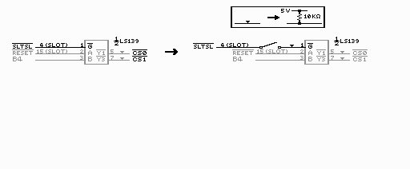
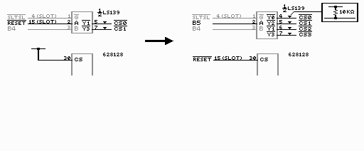
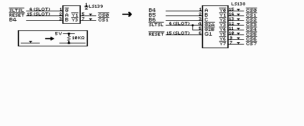
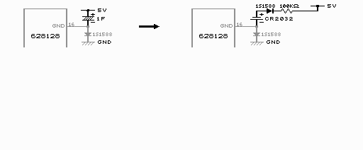
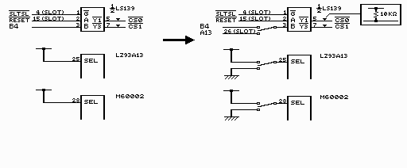

特別付録 −−− 更なる改造のヒント −−−
ここでは、更なる改造のヒントを書いておきます。ちょっと不親切な書き方ですが、付録ですので大目に見てやって下さい。
１ ＳＲＡＭを切り離すスイッチを付ける
立ちあげ時にはＳＲＡＭの内容が読まれないようにするスイッチを付けます。
これにより、ＳＲＡＭの内容がおかしくなった時などにも後差しせずにすみます。
やり方は簡単です。まず、１０ｋオームの抵抗をＬＳ１３９の１番ピンと５Ｖの間にいれます。
ＳＲＡＭの/CSと同様です。そして、スイッチは足が２つのものを使います。
足の片方に／ＳＬＴＳＬ、もう片方にＬＳ１３９の１番ピンを繋ぎます。
スイッチがＯＮの時は、／ＳＬＴＳＬがほぼそのままＬＳ１３９（１）に入りますが、
スイッチがＯＦＦの時はＬＳ１３９の１番ピンは５ＶとなってＳＲＡＭアクセスが出来ず、
ＳＲＡＭが切り離されることになります。

２ ＳＲＡＭを増やす
回路的には大した事はありません。増やした分のＳＲＡＭの／ＣＳ（２２）以外のピンは元からあるＳＲＡＭの同じ番号
のピンとくっつけるだけです。元の基板の上下のＳＲＡＭがくっついているのと同じ感じです。
ＳＲＡＭが４個（128kBを４個）までは10kΩの抵抗をＳＲＡＭの数だけ増やすだけで済みます。ＬＳ１３９の２ピンに／ＲＥＳＥＴ
の代わりにＢ５を入れます。ＬＳ１３９の出力は／Ｙ０、／Ｙ２、／Ｙ１、／Ｙ３の順に使ってください。つまり、後でＳＲＡＭを
増やすため、とりあえずＬＳ１３９の２ピンにＢ５をつなぎＳＲＡＭを２個だけ実装する場合、／Ｙ０、／Ｙ２だけを使います。
また、ＳＲＡＭのＣＳは５Ｖにつながっていますが、そこに元々はＬＳ１３９につながっていた／ＲＥＳＥＴ信号をつなげます。

ＳＲＡＭを５個（128kBを５個）以上使う場合は、10kΩの抵抗をＳＲＡＭの数だけ増やすだけで済みません。ＬＳ１３９の代わりに
ＬＳ１３８を使用します。ＬＳ１３８の詳しいピン配置は参考資料などを見てもらえば分かるでしょう。
まず、／ＳＬＴＳＬ信号をＬＳ１３８の／Ｇ２Ａか／Ｇ２Ｂに入れます。両方でも構いません。
どちらか片方にした場合にはもう片方はＧＮＤと繋げておいてください。簡単なのは両方に／ＳＬＴＳＬをいれることですね。
／ＲＥＳＥＴ信号はＧ１にいれます。そして、Ａ，Ｂ，ＣにはそれぞれメガＲＯＭコントローラからの信号Ｂ４，Ｂ５，Ｂ６を入れます。
順番を間違えないようにしてください。
そして、ＬＳ１３８の出力、／Ｙ０〜／Ｙ７を各ＳＲＡＭの／ＣＳ（２２）に繋ぎます。
この／Ｙ０から／Ｙ７の信号を載せるＳＲＡＭの数だけ使います。その時、／Ｙ０から順番に使うようにしてください。
／Ｙ２を使わずに／Ｙ３を使うなんてことをしてはいけません。ＬＳ１３９を使っている時とは入力が違うので、
出力の使い方も異なります。詳しくは省きますが、とにかく順番に使うことだけは守ってください。
ＳＲＡＭの数は／Ｙ＊の数まで、つまり８個までとなります。８個載せれば容量１Ｍバイトですね。これ以上は載せられません。
各ＳＲＡＭの／ＣＳには１０Ｋオームの抵抗を付け、一方をＶＤＤ（５Ｖ）と繋ぐことも忘れないでください。
問題はＳＲＡＭを増設すると、普通のケースには収まらないことで、何かのソフトの大きいケースを利用するとか、
補修部品として手にいれるとかするとよいでしょう。

３ リチウム電池を使う
ゴールドキャパシタ等の電気二重層コンデンサが手に入らない場合や、電池の方が良いという方は、リチウム電池を使いましょう。
リチウム電池はＣＲ２０３２などを使います。
その場合の取り付け方はゴールドキャパシタとほぼ同じですが、電池の＋側と基板の５Ｖをつなぐ部分にダイオード
（１Ｓ１５８８）と１〜１００ＫΩの抵抗を挿入します。ダイオードのラインが入っている側を基板の５Ｖにつなぎます。
つまり、ゴールドキャパシタをダイオード＋抵抗＋リチウム電池を直列につないだものと置き換えるわけです。
リチウム電池は化学的に激しいもので＋と−がショートすると大変危険です。
そこで、基板のどこかで５Ｖ（＋）とＧＮＤ（−）がショートしても悲劇的なことにならないように抵抗を付けておく訳です。
電池は外れないようにしっかり固定しましょう。
電気二重層コンデンサの場合は、コンデンサの内部インピーダンスが大きいので抵抗を付ける必要はありません。

４ １６ｋバンク対応改造
似非ＲＡＭでは、MGLOAD.COM＆MGSAVE.COMを使う事により、メガＲＯＭゲームをロードして遊ぶことができます。
しかし、似非ＲＡＭディスクは８ｋバンクで動作しているため、似非ＲＡＭではアスキーのメガＲＯＭコントローラを使ったゲームの内、
８ｋバンクで切り替えているものしか遊べません。そこで、似非ＲＡＭを１６ｋバンクでも切り替えられるように改造すれば、
１６ｋバンク切り替えのゲームも遊べるわけです。MGSAVEでメガＲＯＭゲームをファイル化する時に、xx*??(h)Banksなどと表示されます。
xxの部分が16のものが16ｋバンクのソフトです。
似非ＲＡＭは８ｋのバンク切り替えのハードです。８ｋバンク切り替えではスロットからのアドレス信号 A0〜A12と
メガＲＯＭコントローラからの拡張アドレス信号B0〜Bx（MA13〜MA13+x）を使ってＳＲＡＭを制御しています。
Bxのxは使っているＳＲＡＭの数によります。１６ｋバンク切り替えでは同容量のＳＲＡＭを制御するのに、
アドレス信号 A0〜A13とB0〜Bx-1（MA14〜MA14+x-1）を使います。
つまり、使われている最上位の拡張アドレス信号の代わりに A13をＳＲＡＭ制御に使用すればいいわけです。
また、メガＲＯＭコントローラを１６ｋバンク切り替えで使う為に、ＳＥＬ信号をＧＮＤにしなければなりません。
ＳＥＬは８ｋバンク切り替えの時は５Ｖになっています。
つまり、アドレス信号の切り替えとバンクサイズセレクト信号（ＳＥＬ）の切り替えで２つのスイッチが必要になります。
ここではＳＲＡＭが２個（２５６ｋＢ）の場合を例にとって説明します。使われている最上位の拡張アドレス信号はB4です。
B4はHC139(LS139)の３番ピンに繋がっていると思います。
６ｐスイッチ×１個を用意します。６ｐスイッチは３ｐスイッチ×２個をまとめたもので、
３ｐスイッチ２個分の信号をまとめて切り替えられます。まず、B4(LZ93A13では1番ピン）とHC139の3番ピンが繋がっているので、
それを切り離します。また、ＳＥＬ(LZ93A13の25番ピン)も５Ｖと繋がっているのでそれも切り離します。
そして以下のようにスイッチを取り付けます。
左の足 真ん中の足 右の足
アドレス信号 B4(LZ93A13) 3番ピン(HC139) A13(SLOT)
バンクサイズ信号 5V SEL (LZ93A13) GND
こうすると、スイッチが左で８ｋバンク、右で１６ｋバンクになります。アドレス信号とバンクサイズ信号両方が一度に切り替わります。
中点ＯＦＦスイッチを使った場合、両方の真ん中の足に１０ＫΩの抵抗をつけてプルアップしておく（５Ｖと繋ぐ）と、
スイッチが真ん中（ＯＦＦ）でＳＲＡＭが切り離しもどきになります。スイッチＯＦＦだとHC139の３番ピンがプルアップのお蔭で
５Ｖとなり、4000hに後半128kバイトの先頭が出るので'AB'が書かれていない見込みが高く、起動しないという訳です。トリッキーです。
スイッチが真ん中の時にＳＥＬは５Ｖにしておく為に、ＳＥＬもプルアップしておきます。その場合、左の足に入れている５Ｖは
入れなくても構いません。スイッチが左のときもプルアップのお蔭で５Ｖになるからです。
似非ＲＡＭを読み書きするときは、読み書きするデータに合わせてバンクサイズを切り替えてから読み書きしてください。
似非ＲＡＭディスクは８ｋバンクで動作するので、８ｋバンクにしてからMGINSTをしなければなりませんし、
ディスクとして読み書きする際も当然８ｋバンクにしておかないとディスクの内容を壊してしまいます。
同じように、１６ｋバンクのゲームを遊ぶ際に８ｋバンクで書き込んでから１６ｋバンクに切り替えても遊べません。
